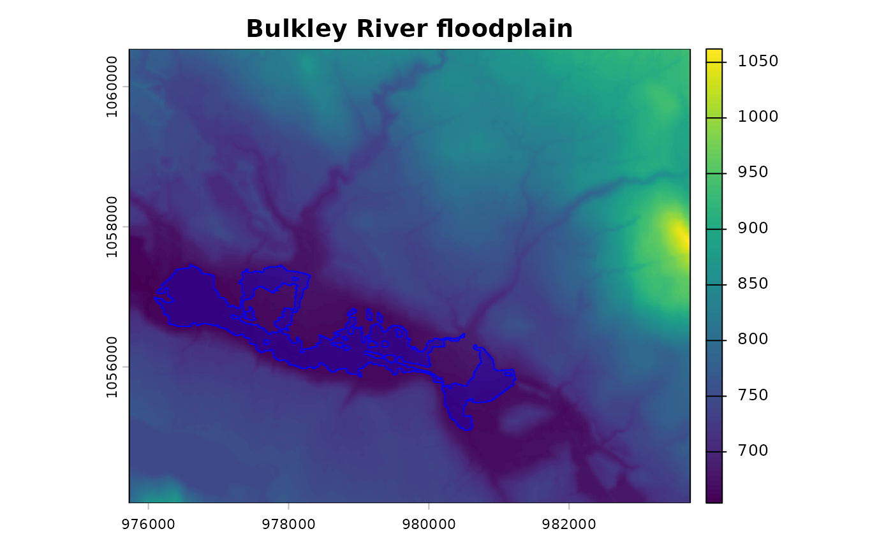

Attribute valley cells to the stream groups that produced them
Source:R/fl_valley_attribute.R
fl_valley_attribute.RdTakes a completed delineation from fl_valley_confine() and works out which
part of it belongs to which watercourse (or reach, or any other grouping of
the stream network). The delineation itself is never recomputed, so grouping
changes relabel the output without moving a boundary.
Usage
fl_valley_attribute(
valleys,
streams,
group,
dem = NULL,
slope = NULL,
max_width = 2000,
cost_threshold = 2500,
crop_margin = max_width,
complete = TRUE
)Arguments
- valleys
A binary (
0/1)SpatRaster, the output offl_valley_confine().- streams
An
sflinestring object — the same network the delineation was built from.- group
Character. Name of the column in
streamsto group by, e.g."gnis_name"or"blue_line_key".NAvalues form their own group.- dem
A
SpatRasterof elevation, used only to deriveslope. Ignored whenslopeis supplied; one of the two is required.- slope
A
SpatRasterof percent slope. IfNULL, derived fromdem.- max_width
Numeric. Maximum valley width in map units (metres). Default
2000. Must match the value used for the delineation.- cost_threshold
Numeric. Maximum accumulated cost distance. Default
2500. Must match the value used for the delineation.- crop_margin
Numeric. Width in map units (metres) added around each group's bounding box before its cost distance is computed. Default
max_width. See Details.- complete
Logical. If
TRUE(default), valley cells that no group reaches within the thresholds are assigned to the group whose streams are nearest, so every valley cell is attributed. IfFALSE, they are left unattributed. See Details.
Value
An sf polygon object with one row per group: a valley column and
a column named after group. Rows overlap where ground is shared between
watercourses. Groups that yield no cells are omitted, with a warning naming
them. The number of valley cells that fell outside every group's thresholds
is attached as the attribute "fl_fallback_cells" — these are assigned to
the nearest group when complete = TRUE and left unattributed otherwise, so
the count reports the same quantity in both modes.
Details
A cell is attributed to group g when it is a valley cell and it
satisfies, for g's streams alone, the two stream-dependent criteria the
VCA already applies to the whole network:
member(cell, g) <=> valley(cell)
AND distance(cell, streams_g) <= max_width / 2
AND cost(cell, streams_g) < cost_thresholdA cell can satisfy this for more than one group, and near a confluence it usually does — ground there genuinely belongs to both floodplains, so the output rows overlap rather than partitioning the valley.
The flood mask is deliberately not recomputed per group. Re-running the
delineation on a subset of the network changes it: the flood surface is
interpolated from every seed cell (see fl_flood_depth()), the distance and
cost criteria loosen as seeds are added, and morphological cleanup couples
patches. Attributing a single delineation instead keeps "the floodplain of
this river" independent of whatever else was in the run.
Coverage
fl_valley_confine() adds cells after intersecting its masks — morphological
closing, hole filling, the channel buffer, and waterbody polygons, which get
no spatial filter at all. Those cells can fall outside every group's distance
and cost thresholds. With complete = TRUE they are assigned to the group
with the nearest streams so the attribution covers the delineation exactly;
the count is reported and available as attr(x, "fl_fallback_cells"). Use
complete = FALSE to see only cost-reachable ground.
Corridor cropping
Each group's cost distance is computed on a crop around that group's own
streams, expanded by crop_margin. This is an approximation, not a bound: a
least-cost path can in principle leave the crop and return, and across
near-flat ground a long detour costs very little. On the bundled test data the
default of max_width — twice the corridor half-width — reproduced the
uncropped cost surface exactly, while max_width / 2 left 200 corridor cells
differing by up to 217 cost units. Those particular cells sat far enough from
the threshold that membership did not change, but a tighter crop does drop
ground silently (at crop_margin = 500 on the same tile, 33,860 cells).
Widen it if group corridors are unusually convoluted.
Performance
Attributing the bundled tile by gnis_name (5 groups, 518,400 cells) takes
about 0.7 s against 1.4 s for the delineation itself. That saving comes from
the crop, so it shrinks as a group's bounding box approaches the full grid —
a long sinuous mainstem is the worst case, and a run with hundreds of groups
on a multi-million-cell raster has not been measured. Supplying slope
avoids re-deriving it from dem.
Examples
dem <- terra::rast(system.file("testdata/dem.tif", package = "flooded"))
streams <- sf::st_read(
system.file("testdata/streams.gpkg", package = "flooded"),
quiet = TRUE
)
precip_r <- fl_stream_rasterize(streams, dem, field = "map_upstream")
valleys <- fl_valley_confine(dem, streams,
field = "upstream_area_ha", precip = precip_r)
# Which part of the floodplain belongs to which watercourse?
by_stream <- fl_valley_attribute(valleys, streams, group = "gnis_name",
dem = dem)
by_stream[, c("gnis_name")]
#> Simple feature collection with 5 features and 1 field
#> Geometry type: MULTIPOLYGON
#> Dimension: XY
#> Bounding box: xmin: 976087.5 ymin: 1055098 xmax: 982717.5 ymax: 1059548
#> Projected CRS: NAD83 / BC Albers
#> gnis_name geometry
#> 1 Bulkley River MULTIPOLYGON (((976627.5 10...
#> 2 Cesford Creek MULTIPOLYGON (((978937.5 10...
#> 3 Richfield Creek MULTIPOLYGON (((978307.5 10...
#> 4 Robert Hatch Creek MULTIPOLYGON (((977667.5 10...
#> 5 <NA> MULTIPOLYGON (((980647.5 10...
# One named river's floodplain, on its own — it ends where the river does
terra::plot(dem, main = "Bulkley River floodplain")
plot(sf::st_geometry(by_stream[!is.na(by_stream$gnis_name) &
by_stream$gnis_name == "Bulkley River", ]),
add = TRUE, col = "#0000ff40", border = "blue")
